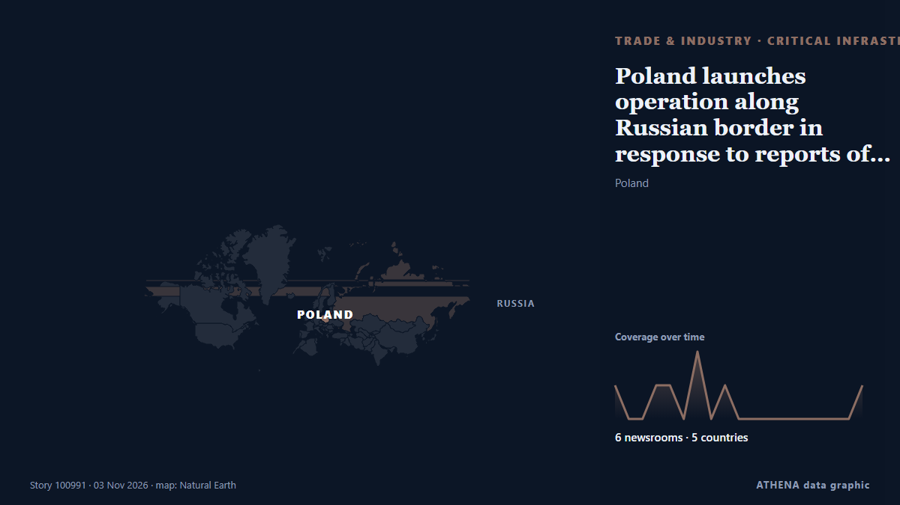

Poland launches operation along Russian border in response to reports of planned sabotage

Additional police, including counter-terrorism officers, have been sent to the region. von Notes from Poland
Unabhängig gemeldet von 6 Medien in 5 Ländern seit dem 2. Nov., zuerst von Ukrainska Pravda (English); die Berichterstattung flaut ab. ATHENA stuft das Risiko als mäßig ein (2.4/10), vor allem wegen der Schwere des beschriebenen Schadens und seiner geografischen und sektoralen Reichweite. Die Konfidenz liegt bei 78 % (hoch): 6 Medien bestätigen es unabhängig, bei einer mittleren Verlässlichkeit der Quellen von 78 %. Medien nach Land: Ukraine (3), Aserbaidschan (2), Polen (1). Berichterstattung: 2. Nov. bis 3. Nov., 20 Stunden.
Warum es wichtig ist: Störungen in Handel, Industrie oder Infrastruktur wandern durch die Lieferketten und verändern Kosten und Lieferzeiten weit entfernt.
Was sich geändert hat: 8 neue Berichte von 6 Redaktionen in den 24 Stunden bis 3. Nov..
Erste Schlagzeile: Poland creates a military brigade for defence on the border with Russia
Schlagzeilen werden auf Englisch angezeigt, wie veröffentlicht.
Auf einen Blick
Ausgewählt, bewertet und geschrieben nach der veröffentlichten Methodik von ATHENA. Kein Redakteur greift in einzelne Ereignisse ein. So entsteht ATHENA ›
| 02 Nov 11:16 UTC | 1 |
|---|---|
| 02 Nov 12:16 UTC | 0 |
| 02 Nov 13:16 UTC | 0 |
| 02 Nov 14:16 UTC | 1 |
| 02 Nov 15:16 UTC | 1 |
| 02 Nov 16:16 UTC | 0 |
| 02 Nov 17:16 UTC | 2 |
| 02 Nov 18:16 UTC | 0 |
| 02 Nov 19:16 UTC | 1 |
| 02 Nov 20:16 UTC | 0 |
| 02 Nov 21:16 UTC | 0 |
| 02 Nov 22:16 UTC | 0 |
| 02 Nov 23:16 UTC | 0 |
| 03 Nov 00:16 UTC | 0 |
| 03 Nov 01:16 UTC | 0 |
| 03 Nov 02:16 UTC | 0 |
| 03 Nov 03:16 UTC | 0 |
| 03 Nov 04:16 UTC | 0 |
| 03 Nov 05:16 UTC | 1 |
| 03 Nov 06:16 UTC | 0 |
| 03 Nov 07:16 UTC | 1 |
| 02 Nov 12:33 UTC | 0.0 |
|---|---|
| 02 Nov 19:46 UTC | 1.7 |
| 03 Nov 06:05 UTC | 2.4 |
| 03 Nov 07:40 UTC | 2.4 |
Warum diese Zahlen
Bedeutung
Risiko
Konfidenz
Die Berichterstattung – wer berichtete, und wann
Schlagzeile wie veröffentlicht · öffnet das Original- Ukrainska Pravda (English) · UkrainePoland creates a military brigade for defence on the border with Russia
- Notes from Poland · PolenPoland launches operation along Russian border in response to reports of planned sabotage
- APA (English) · AserbaidschanPoland launches operation along Russian border in response to reports of planned sabotage
- Anadolu Agency (English) · TürkeiPoland deploys counterterrorism police near Russian border over sabotage threats
- Ukrainska Pravda (English) · UkrainePolish security forces prepare for possible sabotage on border with Russia's Kaliningrad Oblast
- TASS (English) · RusslandPoland deploys additional police forces to border with Russia
- Kyiv Independent · UkrainePoland deploys counterterrorism police near Russian border amid sabotage warnings
- APA (English) · AserbaidschanPoland to establish border defense brigade near Kaliningrad